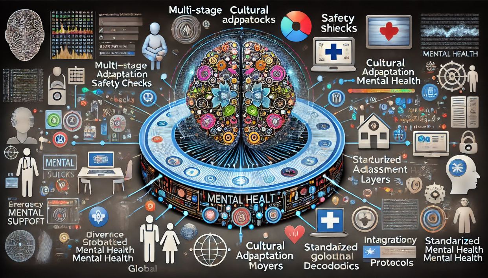

|
Universal
screening for General Movements Assessment (GMA)
This project
develops AI-powered video analysis tools for universal developmental
screening in infants. Our computer vision framework processes mobile
phone videos to perform automated General Movements Assessment (GMA),
detecting subtle movement patterns that may indicate conditions like
cerebral palsy. The system employs advanced deep learning architectures
optimized for varied recording conditions, incorporating temporal
motion analysis and pose estimation. Supporting tools enable efficient
clinical annotation and validation while maintaining strict privacy
standards. By making screening accessible through everyday devices, we
aim to enable early detection and intervention for developmental
disorders across diverse healthcare settings.
Partners:
Cerebral Palsy Alliance (Australia), CP360 (International), Curtin
University, Perth Children's Hospital, The University of Sydney,
University of Melbourne, Royal Women's Hospital, Amazon, The Children's
Hospital at Westmead, The University of Queensland, Mater Mothers'
Hospital
Duration: 2019 - present
Interpretable movement analysis of joints
Safely-first Large Language Models for Mental Health Support
This project
aims to develop a safety-first AI system for mental health support,
centred on a specialised large language model. The system features role
playing, scenarios simulations, social media analysis, multi-stage
safety checks, intention prediction, crisis detection, and clear
escalation protocols to human clinicians. Key components include
specialised risk assessment models, theory of mind modules, cultural
adaptation layers, and integration with standardised mental health
assessments. The architecture incorporates privacy protection, abuse
prevention, and real-time monitoring. The system supports multiple
languages and demographics while maintaining clinical accuracy through
expert-validated responses and continuous safety evaluation.
Partners:
Ton Duc Thang University, Vietnam Institute for Advanced Study in
Mathematics (VIASM), Vietnam's National Institute of Mental Health,
Hanoi Medical University.
Duration: 2024 - present

DALL.E 3 interpretation of the project description
Modelling
Electronic Medical Records (EMRs)
This project
develops advanced analytics frameworks to unlock insights from vast
clinical datasets accumulated over decades across hospitals and medical
centers. Using state-of-the-art machine learning techniques, we create
comprehensive data characterization models that operate at both
individual patient and population cohort levels. Our research focuses
on developing robust representations of clinical data, enabling
sophisticated patient clustering, trajectory analysis, and outcome
prediction. By integrating statistical modeling with deep learning
approaches, we aim to transform raw clinical data into actionable
insights that improve healthcare delivery, resource allocation, and
patient outcomes while maintaining privacy and interpretability.
Partners:
Barwon Health, Victoria Dept. of Health

Modelling EMR for the past and present, predicting the future.
Suicide
risk prediction
This project
addresses one of modern healthcare's most critical challenges: suicide
prevention. By leveraging machine learning and comprehensive patient
data analysis, we develop systems to enhance clinical risk assessment
and intervention strategies. Our framework analyzes mental health
histories, clinical assessments, and intervention outcomes to identify
reliable risk predictors and validate assessment methodologies. The
system supports clinicians by automatically surfacing relevant patient
information, detecting early warning signs, and providing
evidence-based insights for prevention. This data-driven approach aims
to improve the accuracy and reliability of suicide risk assessment
while enabling more timely and effective interventions.
Partners:
Barwon Health.
Stable
high-dimensional clinical prediction models
This project
tackles the challenge of building reliable clinical prediction models
from high-dimensional but limited medical data. We develop novel
machine learning approaches that balance comprehensive risk factor
coverage with model stability. The framework incorporates advanced
regularization techniques leveraging dependency structures among features, uncertainty quantification methods, and
robust feature selection strategies to ensure reliable predictions
despite data sparsity. By carefully managing the trade-off between
model complexity and stability, we enable the discovery of previously
overlooked risk factors while providing statistical guarantees on
prediction reliability. This approach enhances clinical decision
support by offering both comprehensive and trustworthy risk assessments.
Partners:
Barwon Health

Dependency structures in disease network.
Pre-term birth
prediction
Every pregnancy is expected to reach full term. However,
approximately 10-15% of all infants are born prematurely, before 37
weeks of gestation. Preterm birth is a major cause of infant mortality,
developmental delays, and long-term disabilities. The earlier the
delivery, the longer the infant requires intensive care, resulting in
increased medical costs and emotional stress for the family. Predicting
preterm births is crucial as it enables healthcare providers to
implement preventive care and early interventions. This project aims to
develop explainable machine learning models to predict preterm births
using large observational databases. We extract hundreds of potential
predictive signals and develop machine learning methods that quantify
the uncertainty associated with these signals.
DALL.E3 illustration |
Simple checklist for preterm risk assessment.
|
Partners:
Barwon Health, Royal North Shore Hospital, The University of Sydney.
Deep learning
for healthcare
We
conceptualize healthcare as a computational system where patient
trajectories evolve through algebraic transformations. Our framework
represents medical entities (diseases, treatments, facilities) as
vectors in a learned embedding space, where healthcare processes become
mathematical operators. Using deep learning architectures with memory
and reasoning capabilities, we model hospital visits as vector
transformations between illness and treatment states. This allows us to
capture complex patterns in disease progression, treatment
effectiveness, and care transitions. Like a medical Turing machine, the
system processes health trajectories through time, enabling data-driven
decision support while maintaining interpretability through its
algebraic foundation.
Partners:
Barwon Health, Victoria Dept. of Health
Memory-augmented neural networks for health trajectories
Physics-informed
ML for pandemics
Predicting the evolution
of temporal processes, such as epidemic spread, poses unique challenges
when relying solely on observed time-series data, particularly during
early stages when data is scarce. Classical epidemiological models,
like the SIR family, rely on simplified differential equations that
make strong assumptions about transmission dynamics. While these
mechanistic models provide theoretical foundations, they may
oversimplify complex real-world patterns. Conversely, pure data-driven
approaches using deep learning can capture intricate patterns but
struggle with long-term forecasting due to limited training data. Our
research develops novel hybrid methodologies that bridge this gap by
embedding mechanistic principles within neural architectures. These
models adapt their underlying mechanisms as the epidemic evolves,
accounting for dynamic changes caused by policy interventions and
social responses. This approach combines the theoretical rigor of
epidemiological models with the flexibility of modern machine learning.
Partners:
Ho Chi Minh City Council.
Multi-phase Physics-Informed Neural Network (MP-PINN ) for pandemics.
PIML for
medical image analysis
This project
develops physics-informed approaches for medical image analysis
(PIMIA), integrating fundamental physical principles with deep learning
architectures. Our framework incorporates imaging physics, anatomical
constraints, and biological processes across diverse tasks:
super-resolution reconstruction, multi-modal registration, synthetic
image generation, and diagnostic classification. By systematically
modeling physical laws and anatomical knowledge, we enhance model
robustness and interpretability. The research investigates various
physics-guided operations, considering region-specific anatomy, imaging
modalities, and underlying physical processes. This comprehensive
approach enables more reliable and interpretable medical image analysis
while reducing dependence on large training datasets.
Partners: Queensland University of Technology, CSIRO
Social
media monitoring and modelling for mental health
| This project
harnesses social media data to understand and support mental health
through advanced analytics. Our framework analyzes multiple dimensions
of user-generated content: textual expressions, emotional patterns,
social network structures and dynamics, and behavioral indicators.
Using natural language processing and machine learning, we model
temporal trajectories of mental states, detect personality traits, and
measure social influence patterns. This enables both individual-level
monitoring and population-scale mental health trend analysis. The
research aims to develop effective digital intervention strategies
while providing early warning systems for mental health challenges,
integrating clinical expertise with computational behavioral analysis. | |
Explainable
AI for better treatment of AAA
This
project aims to develop new explainable AI to improve the
personalised management and treatment of abdominal aortic
aneurysms (AAAs), a severe condition that affects 20M people worldwide.
This will be part of the AAA-MEDICAL
Synergy program 2024-2029. The
project focuses on integrating diverse data types from the
program's biobanks, registries, and clinical trials,
including
genetic data, clinical information, imaging features, biomarkers, and
biomechanical parameters. We develop
machine learning models to:
- Predict individual AAA growth rates and
rupture risk, improving upon existing risk calculators.
- Identify patient subgroups most likely to
benefit from specific drug therapies, supporting personalized treatment
selection.
- Optimise
drug delivery strategies for AAA treatment, particularly for novel
targeted approaches like nanoparticle-conjugated drugs.
- Analyse
and interpret data from preclinical studies, including the novel mouse
model and human AAA explant experiments, to accelerate drug discovery
and development.
Left: DALL-E 3 illustration. | |
|
The project employs a range of
machine learning techniques, including deep learning and
Generative AI for integrating multi-modal data, reinforcement
learning for treatment optimisation, and explainable AI
methods
to ensure clinical applicability.
Partners:
James Cook University.
Duration: 2024-2029
ML
for management of chronic diseases
This project develops machine learning
frameworks to optimize chronic disease management through intelligent
patient stratification. Using comprehensive medical data from patients
with conditions like diabetes, our system identifies distinct subgroups
with similar disease progression patterns, treatment responses, and
care needs. By analyzing clinical histories, biomarkers, lifestyle
factors, and treatment outcomes, we create data-driven patient
classifications that enable targeted intervention strategies. This
personalized approach allows healthcare providers to optimize resource
allocation, customize treatment plans, and improve patient outcomes
through evidence-based care protocols tailored to each management
group's specific characteristics and needs.
Partners: Barwon Health, Vic Dept. of Health
ML for
digital enhanced living
This project, within the ARC Research Hub for
Digital Enhanced Living, develops AI systems for next-generation
assisted living environments. We create machine learning frameworks
that process multi-modal sensor data from smart homes to enable safe
and effective in-home care. Our research integrates advanced analytics
with ambient sensing technologies to monitor resident health, predict
care needs, and automate emergency response systems. The platform
emphasizes scalability, affordability, and privacy while providing
comprehensive support for independent living. This smart infrastructure
approach transforms traditional care delivery through intelligent,
technology-enhanced living spaces. Partners:
Barwon Health, Monash University, Flinders University, Black Dog
Institute, University of New South Wales, University of Copenhagen,
Friedrich Alexander University of Erlangen, Technical University of
Denmark, The University of Auckland , Auckland University of
Technology, Dublin City Universit, Uniting AgeWell, ACH Group, Icetana,
GoAct, C-Born, NeoProducts Pty Ltd, Dementia Australia, Uniting
NSW.ACT, Interrelate, Health Metrics Duration: 2017-2023.
High-dim time-series modelling and forecasting over sensor data.
|